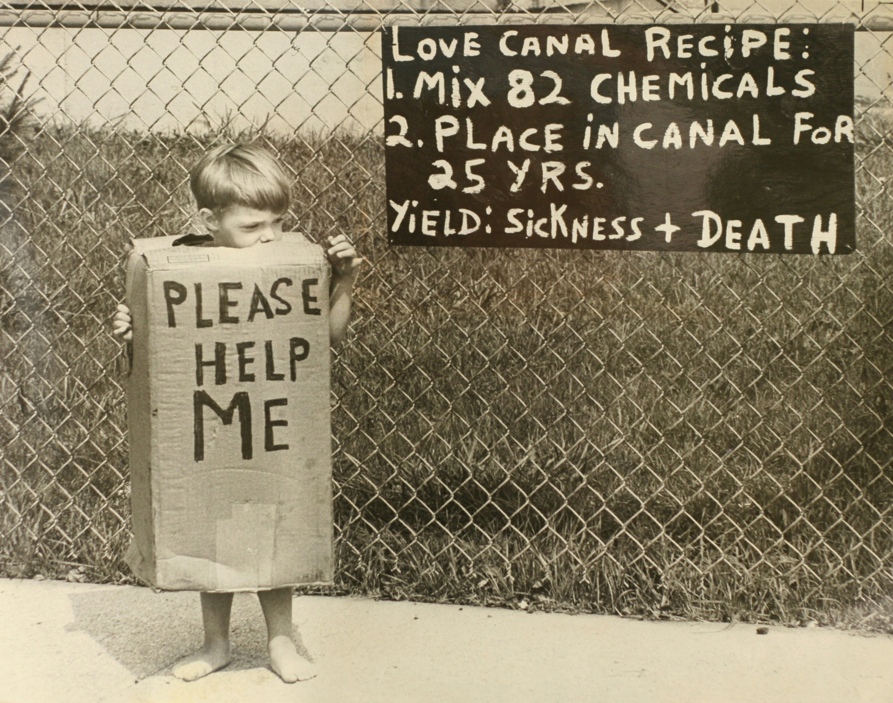

The Love Canal Disaster
A Neighborhood Built on Poison: In the 1940s, the Hooker Chemical Company buried over 20,000 tons of toxic waste in an abandoned canal in Niagara Falls, New York. The site was capped with clay, but in 1953, the land was sold to the city for a single dollar. Unaware of the long-term environmental risks, the city built an elementary school and a residential neighborhood directly on top of the buried chemicals.

The Toxic Awakening: By the 1970s, municipal construction had broken through the protective clay layer. Toxic sludge and noxious fumes began seeping into basements, soil, and school playgrounds. The exposure had devastating effects on the community, with residents reporting alarming rates of birth defects, miscarriages, and cancer clusters.
The Evacuation (Intervention): After fierce protests from local residents, the crisis captured national attention. In 1978, a federal health emergency was declared—the first in U.S. history for a man-made disaster. Hundreds of families were permanently evacuated, and the neighborhood was eventually demolished.
Key Facts
Date: August 1978 (Federal Emergency Declared)
Location: Niagara Falls, New York
Casualties: Widespread severe health impacts (cancers, birth defects); over 800 families evacuated.
Cause: Improper disposal of 20,000 tons of toxic chemical waste and subsequent construction over the site
The Love Canal disaster serves as a stark reminder of the long-term dangers of corporate negligence and improper waste disposal. It demonstrated that simply burying chemicals does not neutralize the threat. This tragedy fundamentally changed environmental regulations worldwide, directly leading to the creation of the Superfund law (CERCLA) to legally mandate the cleanup of abandoned hazardous waste sites.